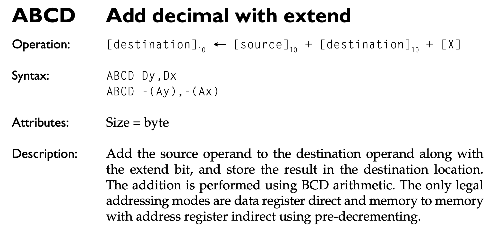

Instruction handlers
Instruction handlers#
This article explains the inner workings of a typical instruction handler. All instruction handlers are stored in a large lookup table. The previous article showed how Moira retrieves the handler from the table and calls it via a function pointer call.
To get an idea of how a typical command handler is structured, let’s see how the ABCD command is implemented:

The following handler implements the register addressing variant of the ABCD instruction:
template <Core C, Instr I, Mode M, Size S> void
Moira::execAbcdRg(u16 opcode)
{
AVAILABILITY(C68000)
int src = _____________xxx(opcode);
int dst = ____xxx_________(opcode);
u32 result = bcd<C, I, Byte>(readD<Byte>(src), readD<Byte>(dst));
prefetch<C, POLL>();
SYNC(2);
writeD<Byte>(dst, result);
// 00 10 20 00 10 20 00 10 20
// .b .b .b .w .w .w .l .l .l
CYCLES_DN ( 6, 6, 4, 0, 0, 0, 0, 0, 0)
FINALIZE
}
All instruction handlers are declared with four template arguments:
Core C: The emulated CPU coreInstr I: The emulated instructionMode M: The emulated addressing modeSize S: The size attribute of the instruction
In case of the ABCD Dy,Dx instruction, the template arguments are instantiated as follows:
CequalsC68000,C68010orC68020, depending on the emulated CPU modelIequalsABCDMequalsMODE_DNSequalsBYTE
All instruction handlers begin and end with a special macro called AVAILABILITY and FINALIZE, respectively. The AVAILABILITY macro expands to a series of assertion checks that verify the integrity of template parameter C. In addition, delegation function willExecute is called if the statement is among the observed instructions, as specified in MoiraConfig.h.
In the next two lines, the source and destination registers are extracted from the opcode. Then the bcd function is called, which emulates the core functionality of the ABCD instruction.
The next line instructs Moira to emulate the prefetch operation. Like many other functions, prefetch accepts an optional template argument that can be used to alter the inner workings of this function. In this example, the POLL flag is passed, which causes Moira to query the IPL pins in the middle of the prefetch operation.
After that, the result of the bcd operation is written into the destination register by calling writeD.
The next code section is only relevant in simple cycle mode. In this mode macro CYCLES_DN is expanded to a suitable call of sync. In our example, it expands to sync(6) when emulating a M68000 or M68010, and to sync(4) for all other models. In precision timing mode, the macro expands into an empty statement, because the sync calls have already been issued in the correct places in the instruction handler code.
Like all instruction handlers, the instruction handler for the ABCD command ends with the FINALIZE macro. It is responsible for calling the delegation function didExecute if Moira has been configured to do so in MoiraConfig.h.